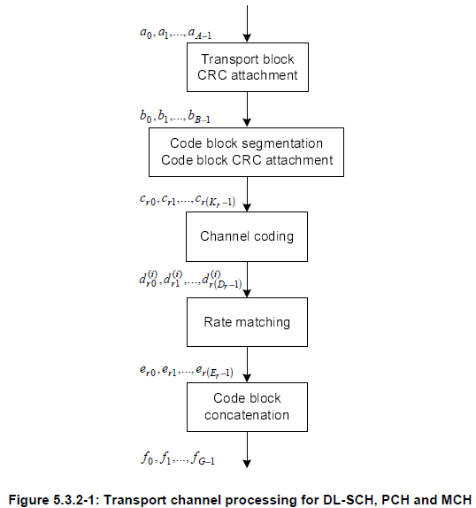
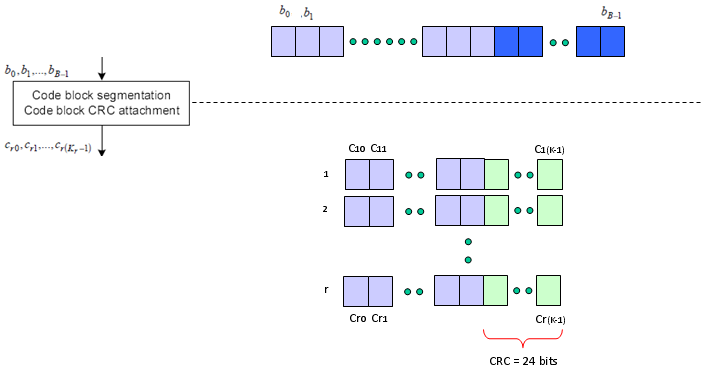
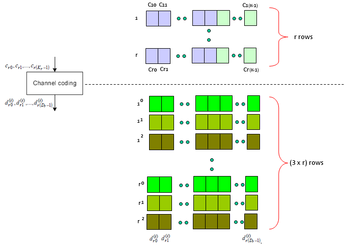
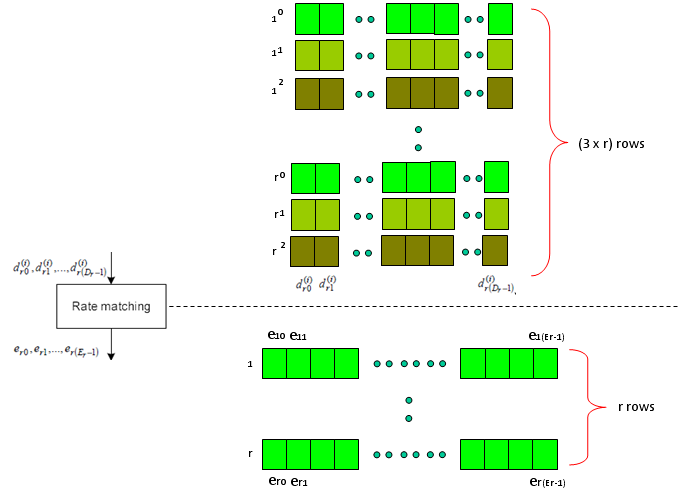
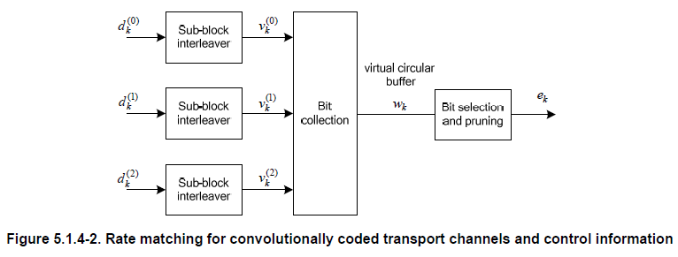
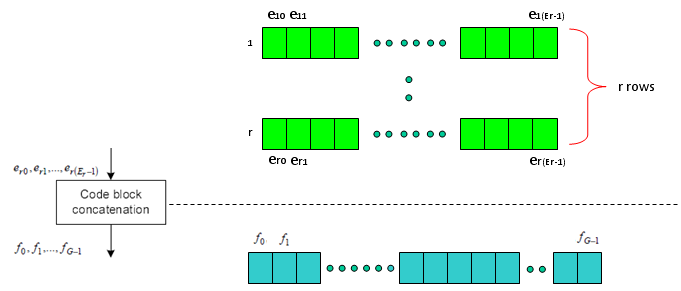
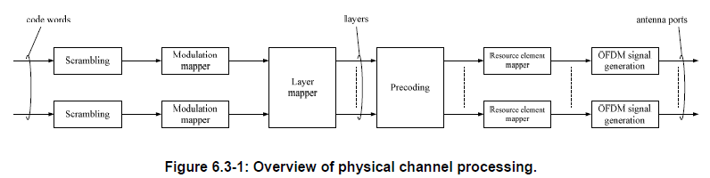

LTE Basic Procedure Go Back To Index Home : www.sharetechnote.com
Channel Coding Processing for DL SCH/PCH/MCH
First as a disclaimer, I am very early stage of studying this field. For a long time since I joined into the wireless communication, this kind of processing has always the part that I was so eager to undersand but eventually gave up. In LTE as well, the document like 36.211, 36.212 were mysterious specification to me. I have always wondering "How those guys can implement real device(PHY) just by reading these thin, vague, cloudy (at leas to me) documents ?".
Very recently an expert in this area helped me so much to get some insight/big picture to start with. (I still think several month to go to be able to draw detailed picture for this, but getting the initial big picture would be the most important step).
Here goes my first picture and this will get more detailed illustration later... so keep checking this part if you are interested.
The first picture you have to be familiar (don't try to memorize... just see this as often as possible and just make it familiar) . This figure is from 36.212.
Let's just make a two important bulets here. Whatever a processing unit is, the first and most important steps you have to understand is "What is the input ?" and "What is the output ?".
What is the input of this whole process ? It is a transport block.
What is the output of this whole process ? It is a series of IQ data to be transmitted from PHY.
So the whole purpose of this process is "to convert a transport block (from MAC) into a series of bit stream data to be transmitted".

Now let's look into each step of the process.
The first step is pretty simple. Just adding 24 bits of CRC block to the end of the input (transport block).

The second step is as follows. It is splitting the big transport block into multiple small blocks and add another CRC to each of the split chunks. Sounds simple ? but there is a couple of things to make it tricky. Why do we need to split the block ? Do we always to have to split the input block ? It would be understandable to split a very large input block into multiple smaller block, but if we have to split even a small input block, isn't it inefficient ?
The generic answer is that the process split the input block only when the block is very large.
Then the question is "How large it would be to be splitted ?" In LTE case, 6144 (bits) is the number. (See 5.1.2 Code block segmentation and code block CRC attachment of 36.212)

Next step is the famous Turbo Coding step. I am not able to explain on how turbo coding works in easy/plain language mainly because I don't understand it clearly. But for now, let's just focus on only one fact. If you see the turbo coding block diagram in 36.212. You would see that one bit input become 3 bit output as it goes through the turbo coding processor (It means the coding rate is 1/3). In this process, one input row generate three rows of output as follows.

Next step is Rate Matching step. This is the most mesterious part to me. The generic Idea is like this. I said Turbo coding generate three rows of output for each row of input. In this rate matching process, the each set of three rows of input stream became one row of bit stream. The question is "How to convert the a set of three row into one row ?" Is it just by concatenating the three row into one long row ? Is it just random mix of the three row ? Is it by interleaving the three row into one ?".
This is the question you have to find the answer from 5.1.4.2 Rate matching for convolutionally coded transport channels and control information of 36.212. Good luck with your endeaver -:) I think it will take a couple of month for me to understand this even with a good tutor around me.

Just adding another big picture to this rate matching step, take a quick look at the following figure from 36.212. You see the three lines of Turbo coding output gets into this rate matching block and comes out as a single line of bit stream. Our goal is to understanding the detailed process of "interleaving", "BitCollection", "Bit Selection and pruning" procedure.

Next is the last step which is relatively simple. Combine the multiple rows of imput into one long bit stream as shown below.

Now you may have a question. Is this the end of the process ? Are these data get directly transmitted out of the antenna ? Unfortunately No. The output of this complicated process become the input (starting point) of another complicated process as shown below. I means there are a lot of stuffs you have to study pulling the hair -:)
